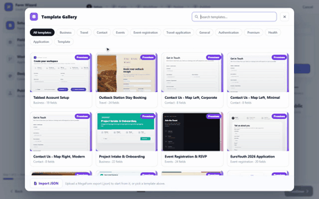

Form templates — the gallery, live preview, and the tabbed template
MegaForm ships a template gallery: complete, styled forms you can preview live and take as a starting point. This page follows one popular request end to end — a tabbed form, where the filler can jump between tabs freely instead of being marched through a one-way wizard.

Steps shown
- New Form → Template Gallery opens the gallery: cards with live thumbnails (each thumb is the real form rendering, not a screenshot), category chips (Business, Travel, Contact, Events, …) and a search box. Tabbed Account Setup (Business · 19 fields) is the first card.
- Hover a card → Preview. The preview dialog renders the template with the real form engine, in memory — nothing is created yet. The stat cards show 13 fields · 6 pages · 6 sections · custom HTML, and there are desktop / tablet / mobile toggles.
- The preview is interactive: in the recording the Company and Billing tabs are clicked inside the preview — the tab bar (Account · Company · Billing · Preferences · Security · Review) navigates freely, with a "0 of 5 sections complete" progress pill.
- Use this template loads it into the wizard with the name prefilled; walk the wizard's steps and Create Form.
- The builder opens on the created form. Its Preview button renders the live form: the same tab bar, and clicking Company → Preferences → Security → Review jumps straight to any tab.
Tabbed vs multi-step
Both split a long form into pages; the difference is who controls the order.
| Multi-step (wizard) | Tabbed | |
|---|---|---|
| Navigation | Next / Previous, in order | Click any tab, any time |
| Progress | Stepper, completed steps marked | Per-section completion pill |
| Good for | Flows with dependencies between pages | Forms people fill out of order |
In the schema, tabbed mode is settings.pageNavigationMode: "tabs" (with tabbedForm: true), and
each tab is a Section. See Template JSON Reference.
Importing your own
The gallery footer accepts Import JSON — a MegaForm export (.json) loads exactly like a
shipped template, including into the same live preview. That is the round-trip for moving forms
between sites or keeping them in source control.
Next steps
- Creating Forms — the wizard and the AI paths.
- Template JSON Reference — the schema behind every template.